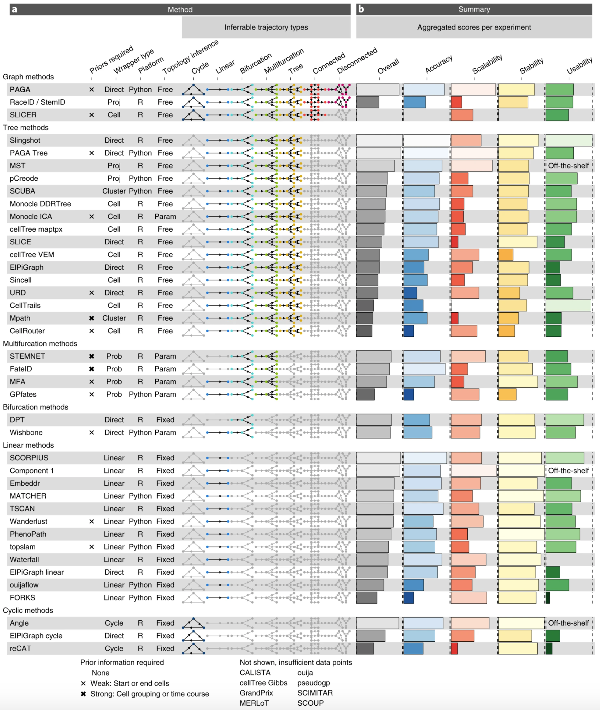

Understand the requirements for RNA velocity computation
Process scRNAseq using ‘spliced’ counts
Perform lineage inference
Compute RNA velocity and use it to orientate lineages
0. Prepare data from scratch
Because RNA velocity reflects the balance between immature and mature transcript content in each cell, one need to count the reads overlapping both spliced regions and unspliced regions. These counts are still generally not available when using public datasets. A way to generate them is to:
Get a cellranger-generated bam file of a scRNAseq experiment
Get the corresponding gene annotation file as a gtf file
Run velocyto to count reads mapped to introns or to exons
Let’s do this on a dataset published by Guo et al., Cell Res. 2018 (doi: 10.1038/s41422-018-0099-2). There are 6 bam files corresponding to human male testis single-cell RNA-seq profiling (GSE: GSE112013).
To run velocyto, one needs to know where introns and exons are located in the genome reference used to process reads. In our case, GRCh38 genome reference was used.
Question
Read cellranger instructions on how to generate a gtf file corresponding to GRCh38 genome reference here.
Create GRCh38 gene annotation gtf file following Cellranger recommendations
To make the velocyto step faster, one can only use reads from bam files originating from cell-containing droplets. One way to do so is to extract cell barcodes from the already filtered scRNAseq dataset, and use them in the -b argument of velocyto.
Question
(Optional) Get cell barcodes from cellranger (this requires pre-processed scRNAseq data, available from GEO)
An important question in scRNAseq field of research is: how to identify a cell trajectory from high-dimensional expression data and map individual cells onto it? A large number of methods have currently emerged, each one with their own specificities, assumptions, and strengths. A nice breakdown (from 2019, so already very outdated!) is available from Saelens et al., Nat. Biotech. 2018 (doi: 10.1038/s41587-019-0071-9):

Slingshot
Slingshot is perhaps one of the most widely used algorithms for users who want to focus on R-based approaches.
Question
Read Slingshot documentation to understand how to identify lineages in a scRNAseq dataset in R
Infer lineages in the testis dataset
Why is it recommended to infer lineages from PCA space rather than t-SNE or UMAP space, even though these spaces do “reveal” an obvious trajectory in 2D?
Check the inferred trajectory(ies) in 2D projection. You can use the embedCurves() to embed the curves in any given dimensional space. Do they fit your expectations?
Re-infer lineages, using cluster annotations as information to build the MST. Note that you will first need to remove the 50th PCA dimension for slingshot to work (bug reported).
What do you observe? Discuss.
Answer
germcells<-testis[, testis$annotation%in%c("Spermatogonia", "Spermatocytes", "Early spermatids", "Late spermatids")]reducedDim(germcells, 'corrected_2')<-reducedDim(germcells, 'corrected')[, 1:49]germcells_slingshot<-slingshot::slingshot(germcells, reducedDim ='corrected_2', clusterLabels =germcells$cluster)germcells$pseudotime<-slingshot::slingPseudotime(germcells_slingshot)[, 'Lineage1']pca_curve<-slingCurves(germcells_slingshot, as.df =TRUE)colnames(pca_curve)<-paste0('PC', 1:ncol(pca_curve))tsne_curve<-slingshot::embedCurves(germcells_slingshot, 'TSNE', smoother ='loess', span =0.1)%>%slingCurves(as.df =TRUE)tsne_curve<-tsne_curve[order(tsne_curve$Order), ]colnames(tsne_curve)<-paste0('TSNE', 1:ncol(tsne_curve))df<-tibble( PC1 =reducedDim(germcells, 'corrected')[,1], PC2 =reducedDim(germcells, 'corrected')[,2], TSNE1 =reducedDim(germcells, 'TSNE')[,1], TSNE2 =reducedDim(germcells, 'TSNE')[,2], cluster =germcells$cluster, pseudotime =germcells$pseudotime)p<-cowplot::plot_grid(df%>%ggplot()+geom_point(aes(PC1, PC2, col =cluster))+geom_path(data =pca_curve, aes(x =PC1, y =PC2))+theme_bw()+coord_fixed(),df%>%ggplot()+geom_point(aes(TSNE1, TSNE2, col =cluster))+geom_path(data =tsne_curve, aes(x =TSNE1, y =TSNE2))+theme_bw()+coord_fixed(),df%>%ggplot()+geom_point(aes(PC1, PC2, col =pseudotime))+geom_path(data =pca_curve, aes(x =PC1, y =PC2))+theme_bw()+coord_fixed(),df%>%ggplot()+geom_point(aes(TSNE1, TSNE2, col =pseudotime))+geom_path(data =tsne_curve, aes(x =TSNE1, y =TSNE2))+theme_bw()+coord_fixed())
Pseudotime inference and expression modelling
The pseudotime is a metric describing the relative position of a cell in the trajectory, where cells with larger values are consider to be “after” their counterparts with smaller values. In trajectories describing time-dependent processes like differentiation, a cell’s pseudotime value is generally used as a proxy for its relative age.
Pseudotime inference
Question
Extract the pseudotime values automatically computed by slingshot.
Check the distribution of pseudotime values across the different cell clusters. What do you observe? Where you expecting this?
Answer
p<-tibble( annotation =factor(germcells$annotation, c("Spermatogonia", "Spermatocytes", "Early spermatids", "Late spermatids")), pseudotime =germcells$pseudotime)%>%ggplot(aes(x =annotation, y =pseudotime, fill =annotation))+geom_violin(scale ='width')+geom_boxplot(outlier.shape =NULL, width =0.1, fill ='white')+theme_bw()+theme(axis.text.x =element_text(angle =45, hjust =1, vjust =1))
Question
Correct pseudotime values as you would expect it to be.
As we saw earlier, TI does not necessarily know which direction is right for a given trajectory. This can be safely estimated using RNA velocity. For a given gene, a high ratio of unspliced to spliced transcripts indicates that that gene is being actively upregulated. Conversely, a low ratio indicates that the gene is being downregulated as the rate of production and processing of pre-mRNAs cannot compensate for the degradation of mature transcripts. Thus, we can infer that cells with high and low ratios are moving towards a high- and low-expression state, respectively, allowing us to assign directionality to trajectories or even individual cells.
Question
Read velociraptor documentation. What do you need to compute RNA velocity scores in R?
Import spliced and unspliced counts computed with velocyto in R.
Try and compute RNA velocity (on germcells only). What do you see?